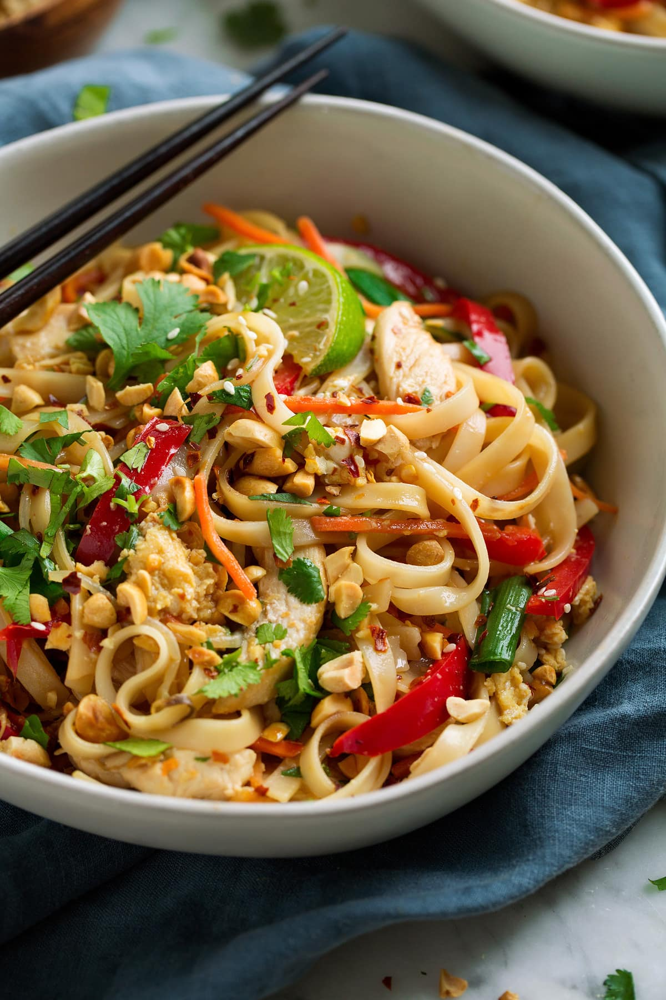

Pad Thai

The quintessential classic! Pad Thai is a stir-fry made with rice noodles, shrimp, chicken,
or tofu, peanuts, scrambled eggs, and bean sprouts.
Traditional pad thai is a harmonious blend of fish sauce, rice vinegar, sugar, and tamarind
sauce. Add a scoop of peanut butter to the sauce to boost the creaminess flavor!
Ingredients
- 8oz flat rice noodles
- 3 tablespoons oil
- 3 cloves garlic, minced
- 8oz uncooked shrimp, chicken, and/or extra-firm tofu, cubed
- 2 eggs
- 1 cup fresh bean sprouts
- 1 red bell pepper, thinly sliced
- 3 green onions, chopped
- 1/2 cup dry roasted peanuts
- 2 limes
- 1/2 cup fresh cilantro, chopped
Ingredients for the Pad Thai sauce
- 3 tablespoons fish sauce
- 1 tablespoon low-sodium soy sauce
- 5 tablespoons light brown sugar
- 2 tablespoons rice vingear and/or tamarind sauce
- 2 tablespoons creamy peanut butter
Steps
- Follow directions on rice noodle package. Some require boiling like pasta, some
require soaking in hot water.
- Mix the sauce ingredients together in a bowl and set aside.
- Heat 1 1/2 tablespoons of oil in a large saucepan or wok over medium-high heat.
- Add the shrimp, chicken, or tofu, garlic, and bell pepper. Stir and cook until
done, then set aside.
- Add 1/2 tablespoon oil and eggs, scrambled into small pieces.
- Combine everything. Add noodles, bean sprouts, peanuts to wok. Stir-fry to mix.
- Top with green onions, cilantro, and lime wedges. Serve immediately!